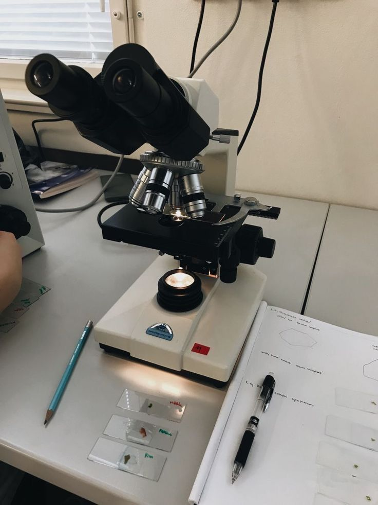

Hi there, I'm Fain 👋
México

Conocí gdintelectual en un grupo de estoicismo, un compañerito muy particular dijo estar sorprendido por mi profesión. Soy biotecnologa y me apasiona la ciencia, con una intuicion muy desarrollada de nacimiento, siempre eh tenido demasiada curiosidad por las ciencias humanas y otras disciplinas del saber. Una mente multifacetica.
Priorizo demasiado la armonia social, así como una observación incesante hacia las demas personas, amo los detalles.
Y sobre todo, el estoicismo es mi forma de vida, y la forma de vida ideal para la mente humana.
creo ENFJ.